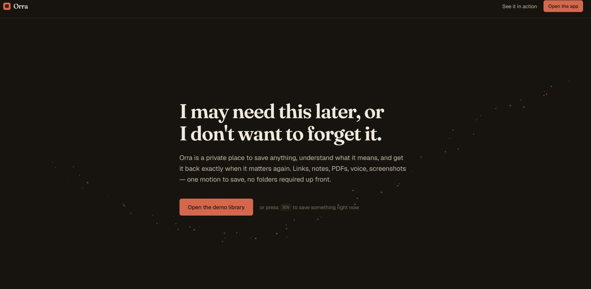
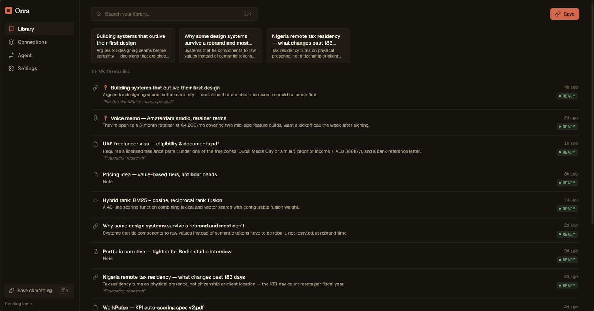
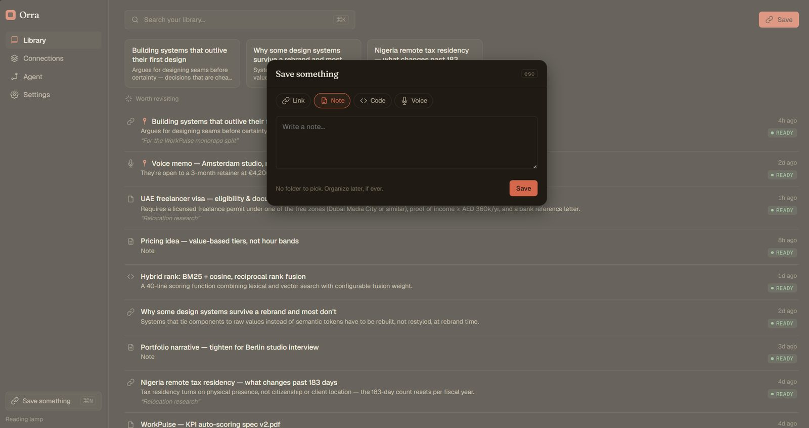

Orra
A personal memory and knowledge system built around one human behavior: I may need this later, and I do not want to forget it. Not a bookmark manager. Not a Shelfy clone. A place that remembers why you saved something, and brings it back when it matters again.
The starting point wasn't a market gap, it was a personal one. I kept finding a piece of research, a reference, a pricing idea, a good interaction pattern, and saving it somewhere, only to lose track of why I'd saved it by the time it would have actually been useful. Bookmark managers store a link. None of them store the reason. Six months later, "why did I keep this" is exactly the question none of them can answer.
The gap isn't storage. It's memory. A bookmark manager remembers that you saved something. It has no idea why, so it can never bring it back at the moment that reason becomes relevant again.

I rejected building another capture tool that stops at "saved." Saving is the easy 20 percent. The system only earns its keep at the other end, when it resurfaces something unprompted: "you saved this for WorkPulse four months ago," or "you haven't opened this in six months, but it matches what you're working on right now." That resurfacing behavior is the actual product. Everything else, capture, search, the library view, exists to feed it.
The single design decision that shaped everything downstream: after capture, Orra can optionally ask one small question, "why are you keeping this?" I rejected making it required, since forcing an answer turns saving into a form, and a form is exactly the friction that makes people stop saving things altogether. It stays optional, editable, and searchable, and it becomes one input among several into how the item gets resurfaced later, never the only one.
I also rejected the generic AI-product visual language on principle, not just on taste. No glowing orb, no purple-to-blue gradient standing in for "intelligence," no sparkle wand, no floating chatbot bolted onto a sidebar-and-KPI-cards layout. That whole visual vocabulary has become shorthand for "this is an AI wrapper," and it actively undermines a product whose entire premise is being trusted with everything a person doesn't want to forget. Trust needed a calmer, more editorial visual language, not a flashier one.

For this phase, the user is me. Orra is built and deployed privately as a real daily tool first, proven on my own knowledge work, before any decision gets made about opening it up. That ordering was deliberate: a memory product that hasn't survived its builder's own daily use for months has no business being pitched to anyone else yet.
The interaction model is a single command center rather than a set of separate destinations. Cmd/Ctrl+K opens one surface for search, ask, and commands together; Cmd/Ctrl+N opens quick capture. Critical actions stay to one or two steps by design, and the library itself refuses to force every saved item into the same rounded card: an editorial list for serious mixed knowledge work, a visual grid for screenshots and design references, a compact table for dense scanning. The content decides the shape, not a template.

Orra is agentic, but I rejected letting the UI collapse into "just a chatbot." The Agent is an orchestrator: it understands a goal, retrieves relevant knowledge, plans which tools to use, asks permission where the action carries risk, executes, verifies, and returns results with sources attached, visibly, not as hidden chain-of-thought dressed up as theatrical "thinking." A request like "prepare a brief on design engineering" shows its sources and its plan stage by stage, because a memory system that can't show its work isn't trustworthy enough to act on your behalf.
Everything was built to run on free-tier infrastructure for a single private user: hybrid Postgres full-text and pgvector search over chunks, private R2 storage with signed access only, magic-byte file validation, and every query scoped to the authenticated user. Paid infrastructure is an upgrade path for when growth demands it, not a Phase-1 requirement, which kept the build honest about what it actually needed on day one versus what it might need eventually.
Orra is in private daily use, which is the only metric that matters at this stage: does it actually get used, unprompted, the way it was designed to be used. It isn't public, so I won't dress up a usage number that doesn't exist yet. What I can point to is the build discipline: a phased, gated build plan (identity and design foundation, then core infrastructure, then memory and capture, then agent and skills) rather than shipping every ambition at once, and a piece of source discipline I'm proud of, an explicit list of AI-product visual clichés the system was designed to avoid, checked against on every screen rather than assumed.